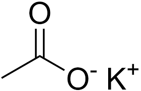

Potasio

Numero atomico 19
Valencia 1
Estado de oxidacion +1
Electronegatividad 0.8
Radio Covalente 1.96
Radio ionico 1.33
Radio atomico 2.35
Configuracion electronica 4s
1
Ionizacion 5.41
Masa atomica 760
Densidad 97.6
George Urbain em 1907